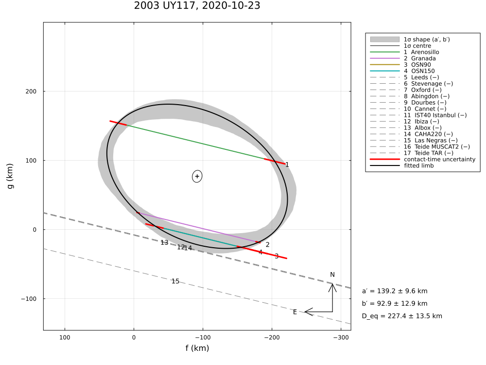
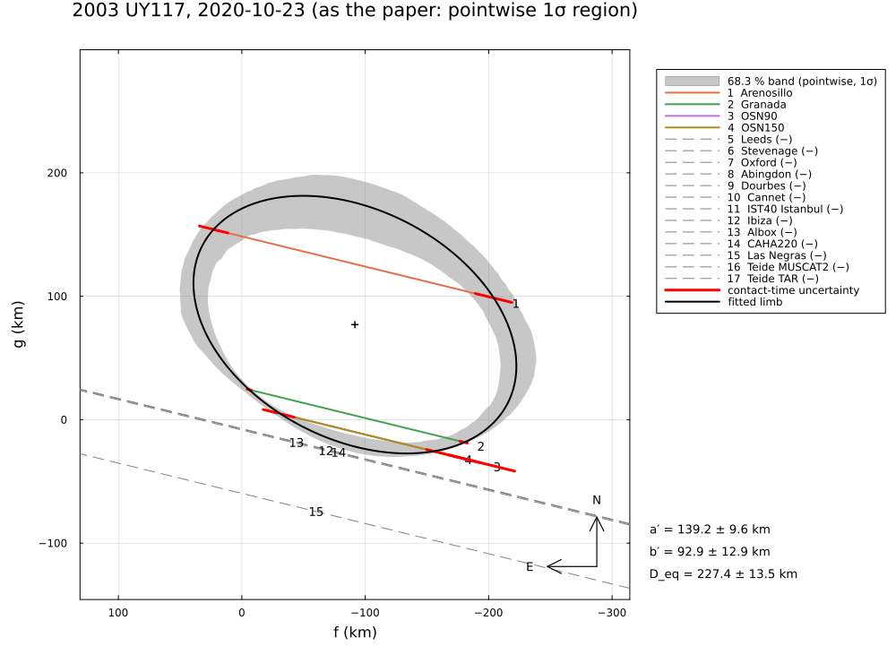
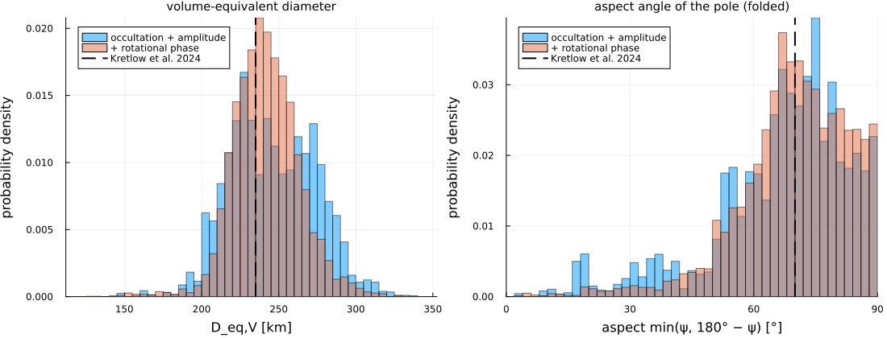
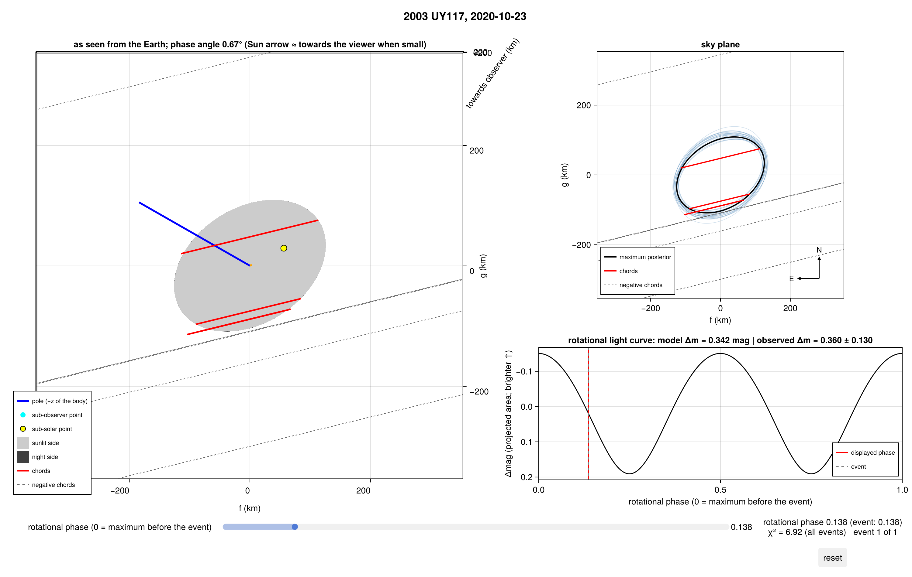
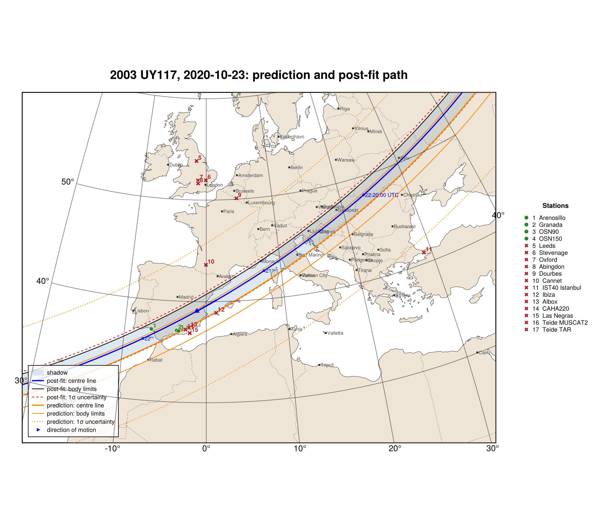

2003 UY117, 2020 October 23
The stellar occultation by (143707) 2003 UY117 on 2020 October 23, reduced from the published timings of Kretlow et al. (2024), A&A 691, A31, "Physical properties of trans-Neptunian object (143707) 2003 UY117 derived from stellar occultation and photometric observations": four positive chords from three sites in Spain (Table 2), 13 negative chords (Table A.1) and the rotational light curve (P = 12.376 h, Δm = 0.36 ± 0.13 mag).
The example covers the limb fit and the astrometry, and the 3-D triaxial ellipsoid from the occultation plus the rotational light-curve amplitude and phase, with an isotropic prior on the unknown pole. The least-squares solutions form a valley of equally good fits, which the posterior describes.
| a′ (km) | b′ (km) | φ′ (°) | D_eq (km) | χ²/dof | |
|---|---|---|---|---|---|
| Kretlow et al. (2024) | 141 ± 9 | 94 ± 16 | −31 ± 11 | 228 ± 21 | 0.43 |
| radial residuals | 139.2 ± 9.6 | 92.9 ± 12.9 | −27.3 ± 11.3 | 227.4 ± 13.5 | 0.41 |
The data are transcribed in examples/data/2003uy117_20201023.jl, with the stored JPL Horizons ephemeris, so the script runs offline:
julia --project=. examples/2003uy117_2020.jl [output_dir] (default: examples/output/2003uy117_2020)The code is not run when the manual is built. The output after each section is that of the last run of examples/2003uy117_2020.jl, stored in examples/output/2003uy117_2020/output.txt.
using Occultations, Random, Printf, Statistics
using Occultations: offset_radec
using Plots
import CairoMakie # saves the GeoMakie maps (Makie figures)
include(joinpath(@__DIR__, "standard_figures.jl"))
include(joinpath(@__DIR__, "data", "2003uy117_20201023.jl"))
out = length(ARGS) >= 1 ? ARGS[1] : mkpath(joinpath(@__DIR__, "output", "2003uy117_2020"))
rng = MersenneTwister(2020)
P = UY117_PAPER
q(x) = quantile(x, [0.15865525393145707, 0.5, 0.8413447460685429])
pm(x) = (v = q(x); @sprintf("%.1f -%.1f +%.1f", v[2], v[2] - v[1], v[3] - v[2]))Event and geometry (paper values in parentheses)
ev = uy117_event()
D = ev.ca.dist_km
@printf("%d positive and %d negative chords; distance %.2f au (%.2f), shadow velocity %.2f km/s (%.2f),\n",
count(ispositive, ev.chords), count(isnegative, ev.chords), D / 1.495978707e8, P.distance_au, ev.ca.vel, P.velocity)
@printf("stellar diameter %.2f km (%.1f), Fresnel scale %.2f km at 0.7 µm (%.2f)\n",
apparent_diameter(ev.star, D), P.star_diameter_km, fresnel_scale(0.7, D), P.fresnel_km_700nm)4 positive and 13 negative chords; distance 33.47 au (33.47), shadow velocity 21.80 km/s (21.80),
stellar diameter 0.43 km (0.4), Fresnel scale 1.32 km at 0.7 µm (1.32)Apparent limb (Table 3)
@printf("%-30s a′ = %5.1f ± %4.1f b′ = %5.1f ± %4.1f φ′ = %6.1f ± %4.1f ε′ = %.2f ± %.2f D_eq = %5.1f ± %4.1f χ²/dof = %.2f\n",
"published", P.a..., P.b..., P.position_angle..., P.oblateness..., P.D_eq..., P.chi2_pdf)
fits = Dict{Symbol,Any}()
for mode in (:radial, :chord)
r = fit_limb(ev; residual=mode, rng=rng)
fits[mode] = r
pa = mod(r[:position_angle][1] + 90, 180) - 90 # in (−90°, 90°] as in the paper
@printf("%-30s a′ = %5.1f ± %4.1f b′ = %5.1f ± %4.1f φ′ = %6.1f ± %4.1f ε′ = %.2f ± %.2f D_eq = %5.1f ± %4.1f χ²/dof = %.2f\n",
mode === :radial ? "radial residuals (as SORA)" : "residuals along the chords", r[:equatorial_radius]...,
r[:semi_minor_axis]..., pa, r[:position_angle][2], r[:oblateness]..., 2r[:equivalent_radius][1],
2r[:equivalent_radius][2], reduced_chi2(r))
end
r2 = fits[:radial]
println("closest negative chords:")
for x in first(check_negative_chords(r2), 4)
@printf(" %-15s %s, %5.1f km from the limb\n", x.chord, x.conflict ? "CROSSES THE LIMB" : "consistent", x.distance)
end
println("(the fitted centre, ", round.((r2[:center_f][1], r2[:center_g][1]); digits=1),
" km, refers to the current JPL orbit; the paper's (119, −10) km to JPL#20)")published a′ = 141.0 ± 9.0 b′ = 94.0 ± 16.0 φ′ = -31.0 ± 11.0 ε′ = 0.33 ± 0.11 D_eq = 228.0 ± 21.0 χ²/dof = 0.43
radial residuals (as SORA) a′ = 139.2 ± 9.6 b′ = 92.9 ± 12.9 φ′ = -27.3 ± 11.3 ε′ = 0.33 ± 0.12 D_eq = 227.4 ± 13.5 χ²/dof = 0.41
residuals along the chords a′ = 138.2 ± 5.2 b′ = 94.2 ± 7.2 φ′ = -29.8 ± 6.4 ε′ = 0.32 ± 0.05 D_eq = 228.2 ± 10.4 χ²/dof = 2.10
closest negative chords:
CAHA220 consistent, 7.9 km from the limb
Albox consistent, 8.2 km from the limb
Ibiza consistent, 9.1 km from the limb
Las Negras consistent, 59.5 km from the limb
(the fitted centre, (-91.6, 77.0) km, refers to the current JPL orbit; the paper's (119, −10) km to JPL#20)Astrometry (Sect. 4.3)
t = Epoch(P.astrometry.epoch)
a = astrometry(r2)
for (label, star) in (("Gaia DR3 star position", ev.star),
("Gaia DR2 star position", Star("03 23 26.2160", "+22 47 19.195"; epoch=ev.star.epoch)))
ra, dec, _ = ephem_radec(ev.body, t)
# the offset is measured relative to the star: a different star position shifts the body
dα = (parse_ra("03 23 26.2160") - parse_ra("03 23 26.2155")) * cosd(dec) * 3.6e6
dδ = (parse_dec("+22 47 19.195") - parse_dec("+22 47 19.194")) * 3.6e6
shift = star === ev.star ? (0.0, 0.0) : (dα, dδ)
r_, d_ = offset_radec(ra, dec, a.offset_ra + shift[1], a.offset_dec + shift[2])
@printf(" %s, %s UTC: RA %s Dec %s (σ %.2f, %.2f mas)\n", label, P.astrometry.epoch, format_ra(r_; digits=5),
format_dec(d_; digits=4), a.ra_err, a.dec_err)
end
@printf(" published: RA %s Dec %s (σ %.1f, %.1f mas)\n", P.astrometry.ra,
P.astrometry.dec, P.astrometry.ra_err, P.astrometry.dec_err)
println(" (the published position matches the solution with the Gaia DR2 star position)") Gaia DR3 star position, 2020-10-23T22:19:21.8 UTC: RA 03 23 26.21358 Dec +22 47 19.3179 (σ 0.38, 0.40 mas)
Gaia DR2 star position, 2020-10-23T22:19:21.8 UTC: RA 03 23 26.21408 Dec +22 47 19.3189 (σ 0.38, 0.40 mas)
published: RA 03 23 26.21404 Dec +22 47 19.3184 (σ 0.3, 0.4 mas)
(the published position matches the solution with the Gaia DR2 star position)Size, albedo
post2 = sample(r2; nsteps=4000, rng=rng)
d2 = derived_samples(post2; n=4000, rng=rng)
Deq = 2 .* d2.equivalent_radius
pV = [(1330.2 / D_ * 10^(-(P.H_V[1] + P.H_V[2] * randn(rng)) / 5))^2 for D_ in Deq]
@printf("area-equivalent diameter %s km (published %.0f ± %.0f), geometric albedo %s (%.3f ± %.3f)\n",
pm(Deq), P.D_eq..., replace(pm(100 .* pV), r"(\d+\.\d) " => s"\1 ") * " %", P.albedo...)area-equivalent diameter 232.7 -13.3 +14.2 km (published 228 ± 21), geometric albedo 13.3 -1.7 +1.9 % (0.139 ± 0.027)3-D shape: triaxial ellipsoid from the occultation and the light-curve amplitude
The body rotates about its shortest axis (principal=true) with the period of the light curve. The pole is unknown: a flat prior in right ascension, isotropic in declination (∝ cos δ). The occultation fixes the apparent ellipse, and the amplitude Δm = 2.5 log(a/b) − 1.25 log[(a²cos²ψ + c²sin²ψ)/(b²cos²ψ + c²sin²ψ)] the elongation for the aspect ψ of the pole.
amp = RotationalAmplitude(ev.tref, P.amplitude...)
prob3 = LimbProblem(ev; model=EllipsoidLimb(principal=true), amplitudes=[amp],
init=Dict(:a => 160.0, :b => 110.0, :c => 90.0, :pole_ra => 337.0, :pole_dec => 62.0, :W0 => 30.0,
:period => P.period_h, :center_f => r2[:center_f][1], :center_g => r2[:center_g][1]),
priors=Dict(:pole_dec => isotropic_pole()),
bounds=Dict(:a => (20.0, 400.0), :b => (20.0, 400.0), :c => (20.0, 400.0)))Least squares: one apparent ellipse and one amplitude cannot fix a, b, c and the pole. Fits from different starting points all reach the same minimum χ², along a valley of solutions:
println("least-squares solutions from different starts (all equally good):")
sols = [fit(prob3; rng=MersenneTwister(k), starts=16) for k in 1:6]
for r in sort(sols; by=r -> r[:a][1])
@printf(" χ² = %.3f a = %5.1f b = %5.1f c = %5.1f km aspect %4.1f° pole (%3.0f°, %+3.0f°) D_eq,V = %5.1f km\n",
r.chi2, r[:a][1], r[:b][1], r[:c][1], r[:aspect][1], r[:pole_ra][1], r[:pole_dec][1], 2r[:volume_equivalent_radius][1])
end
@printf("published (grid search, conditional errors): a = %.0f ± %.0f, b = %.0f ± %.0f, c = %.0f ± %.0f km, aspect %.0f°, D_eq,V = %.0f ± %.0f km\n",
P.axes_3d[1]..., P.axes_3d[2]..., P.axes_3d[3]..., P.aspect, P.D_eq_volume...)
r3 = sols[1]The Bayesian answer is the posterior over the whole valley, with the isotropic prior on the unknown pole:
post3 = sample(r3; nsteps=12000, nwalkers=40, burn=4000, rng=rng)
d3 = derived_samples(post3; n=8000, rng=rng)
# samples of a parameter; periodic ones (pole_ra, W0) centred on their circular mean
function col(post, n)
k = findfirst(==(n), post.names)
x = samples(post)[:, k]
Occultations._periodic_center!(x, post, k)
return x
end
# the occultation and the amplitude are unchanged by a pole flip (ψ → 180° − ψ): only the
# folded aspect min(ψ, 180° − ψ) is constrained
fold(ψ) = min(ψ, 180 - ψ)
function report(post, d, label)
println(label)
@printf(" a = %s, b = %s, c = %s km\n", pm(col(post, :a)), pm(col(post, :b)), pm(col(post, :c)))
@printf(" volume-equivalent diameter %s km, aspect (folded to 0–90°) %s°\n", pm(2 .* d.volume_equivalent_radius),
pm(fold.(d.aspect)))
@printf(" pole in the hemisphere towards the observer (ψ < 90°) in %.0f %% of the samples\n", 100mean(d.aspect .< 90))
@printf(" pole RA %s°, Dec %s°\n", pm(col(post, :pole_ra)), pm(col(post, :pole_dec)))
@printf(" (autocorrelation time ≤ %.0f steps; acceptance %.2f)\n", maximum(autocorrelation_time(post)), post.acceptance)
end
report(post3, d3, "posterior, occultation + amplitude:")The rotational phase at the occultation: 0.63 rotations after the maximum of light (light curve phased to mid-occultation, ≈ 22:21:46 UTC). The paper gives no uncertainty; ±0.05 rotations is assumed here. For an ellipsoid both maxima are equal, so the constraint fixes the orientation of the long axis modulo 180°.
phase = RotationalPhase("2020-10-23T22:21:46", P.rotational_phase, 0.05)
prob4 = LimbProblem(ev; model=EllipsoidLimb(principal=true), amplitudes=[amp], phases=[phase],
init=Dict(:a => 160.0, :b => 110.0, :c => 90.0, :pole_ra => 337.0, :pole_dec => 62.0, :W0 => 30.0,
:period => P.period_h, :center_f => r2[:center_f][1], :center_g => r2[:center_g][1]),
priors=Dict(:pole_dec => isotropic_pole()),
bounds=Dict(:a => (20.0, 400.0), :b => (20.0, 400.0), :c => (20.0, 400.0)))
println("\nwith the rotational phase, least-squares solutions from different starts:")
sols4 = [fit(prob4; rng=MersenneTwister(k), starts=16) for k in 1:6]
for r in sort(sols4; by=r -> r[:a][1])
@printf(" χ² = %.3f a = %5.1f b = %5.1f c = %5.1f km aspect %4.1f° pole (%3.0f°, %+3.0f°) D_eq,V = %5.1f km\n",
r.chi2, r[:a][1], r[:b][1], r[:c][1], r[:aspect][1], r[:pole_ra][1], r[:pole_dec][1], 2r[:volume_equivalent_radius][1])
end
r4 = sols4[argmin([r.chi2 for r in sols4])]
post4 = sample(r4; nsteps=12000, nwalkers=40, burn=4000, rng=rng)
d4 = derived_samples(post4; n=8000, rng=rng)
report(post4, d4, "posterior, occultation + amplitude + rotational phase:")
@printf("published: a = %.0f ± %.0f, b = %.0f ± %.0f, c = %.0f ± %.0f km, D_eq,V = %.0f ± %.0f km, aspect %.0f°, pole (%.0f ± %.0f°, %.0f ± %.0f°)\n",
P.axes_3d[1]..., P.axes_3d[2]..., P.axes_3d[3]..., P.D_eq_volume..., P.aspect, P.pole[1]..., P.pole[2]...)least-squares solutions from different starts (all equally good):
χ² = 6.296 a = 159.4 b = 104.5 c = 91.6 km aspect 69.8° pole (326°, +49°) D_eq,V = 230.3 km
χ² = 6.296 a = 163.1 b = 102.9 c = 90.7 km aspect 66.6° pole (332°, +45°) D_eq,V = 230.1 km
χ² = 6.296 a = 164.2 b = 101.7 c = 90.6 km aspect 65.1° pole (334°, +43°) D_eq,V = 229.6 km
χ² = 6.296 a = 166.2 b = 98.6 c = 91.1 km aspect 61.9° pole ( 26°, +84°) D_eq,V = 228.6 km
χ² = 6.296 a = 190.8 b = 133.7 c = 91.1 km aspect 81.3° pole (303°, +55°) D_eq,V = 264.9 km
χ² = 6.296 a = 190.9 b = 109.2 c = 81.4 km aspect 65.1° pole ( 2°, +87°) D_eq,V = 238.5 km
published (grid search, conditional errors): a = 166 ± 12, b = 108 ± 12, c = 90 ± 13 km, aspect 70°, D_eq,V = 235 ± 25 km
posterior, occultation + amplitude:
a = 177.7 -29.8 +52.1, b = 123.1 -19.9 +14.5, c = 84.8 -16.0 +17.2 km
volume-equivalent diameter 244.2 -26.8 +31.7 km, aspect (folded to 0–90°) 69.8 -16.3 +12.2°
pole in the hemisphere towards the observer (ψ < 90°) in 67 % of the samples
pole RA 310.1 -36.3 +41.2°, Dec 45.8 -24.6 +17.6°
(autocorrelation time ≤ 864 steps; acceptance 0.06)
with the rotational phase, least-squares solutions from different starts:
χ² = 6.296 a = 160.3 b = 96.2 c = 92.9 km aspect 61.4° pole ( 16°, +83°) D_eq,V = 225.4 km
χ² = 6.296 a = 160.5 b = 96.9 c = 92.5 km aspect 62.0° pole ( 8°, +83°) D_eq,V = 225.8 km
χ² = 6.296 a = 160.6 b = 97.3 c = 92.4 km aspect 62.3° pole ( 5°, +83°) D_eq,V = 226.0 km
χ² = 6.296 a = 160.6 b = 97.3 c = 92.4 km aspect 62.3° pole ( 5°, +83°) D_eq,V = 226.0 km
χ² = 6.296 a = 160.6 b = 97.5 c = 92.3 km aspect 62.5° pole ( 3°, +83°) D_eq,V = 226.2 km
χ² = 6.296 a = 161.5 b = 103.0 c = 91.1 km aspect 67.3° pole (323°, +79°) D_eq,V = 229.7 km
posterior, occultation + amplitude + rotational phase:
a = 165.1 -17.7 +29.3, b = 118.0 -15.0 +13.9, c = 91.8 -12.9 +12.0 km
volume-equivalent diameter 240.9 -18.7 +20.7 km, aspect (folded to 0–90°) 70.9 -12.8 +12.3°
pole in the hemisphere towards the observer (ψ < 90°) in 52 % of the samples
pole RA 292.8 -16.1 +33.1°, Dec 51.1 -32.6 +21.3°
(autocorrelation time ≤ 701 steps; acceptance 0.17)
published: a = 166 ± 12, b = 108 ± 12, c = 90 ± 13 km, D_eq,V = 235 ± 25 km, aspect 70°, pole (337 ± 10°, 62 ± 5°)Figures
savefig(cornerplot(post4; vars=[:a, :b, :c, :pole_ra, :pole_dec],
axislabels=Dict(:a => "a [km]", :b => "b [km]", :c => "c [km]", :pole_ra => "pole α [°]",
:pole_dec => "pole δ [°]"),
truths=Dict(:a => P.axes_3d[1][1], :b => P.axes_3d[2][1], :c => P.axes_3d[3][1],
:pole_ra => P.pole[1][1], :pole_dec => P.pole[2][1]), truth_label="Kretlow et al. 2024"),
joinpath(out, "2003uy117_corner_3d.png"))
savefig(cornerplot(post2; vars=[:equatorial_radius, :oblateness, :position_angle],
axislabels=Dict(:equatorial_radius => "a′ [km]", :oblateness => "ε′", :position_angle => "φ′ [°]"),
truths=Dict(:equatorial_radius => P.a[1], :oblateness => P.oblateness[1],
:position_angle => mod(P.position_angle[1], 180)), truth_label="Kretlow et al. 2024"),
joinpath(out, "2003uy117_corner_limb.png"))
h(x, lab; kw...) = histogram(x; bins=60, normalize=true, alpha=0.5, label=lab, kw...)
pD = h(2 .* d3.volume_equivalent_radius, "occultation + amplitude"; xlabel="D_eq,V [km]", ylabel="probability density",
title="volume-equivalent diameter", titlefontsize=10)
histogram!(pD, 2 .* d4.volume_equivalent_radius; bins=60, normalize=true, alpha=0.5, label="+ rotational phase")
vline!(pD, [P.D_eq_volume[1]]; color=:black, linestyle=:dash, linewidth=2, label="Kretlow et al. 2024")
pA = h(fold.(d3.aspect), "occultation + amplitude"; xlabel="aspect min(ψ, 180° − ψ) [°]", ylabel="probability density",
title="aspect angle of the pole (folded)", titlefontsize=10, xlims=(0, 90))
histogram!(pA, fold.(d4.aspect); bins=60, normalize=true, alpha=0.5, label="+ rotational phase")
vline!(pA, [P.aspect]; color=:black, linestyle=:dash, linewidth=2, label="Kretlow et al. 2024")
savefig(plot(pD, pA; size=(1100, 420), legend=:topleft, left_margin=4Plots.mm, bottom_margin=5Plots.mm),
joinpath(out, "2003uy117_3d_posterior.png"))
savefig(plot(r4; title="2003 UY117: apparent limb of the 3-D ellipsoid", size=(900, 650)),
joinpath(out, "2003uy117_ellipsoid_limb.png"))
# the most probable ellipsoid of the posterior with the rotational phase, as an OBJ mesh [km]
S4 = samples(post4); L4 = vec(post4.logp[post4.burn+1:end, :])
best = Dict(zip(post4.names, S4[argmax(L4), :]))
write_obj(joinpath(out, "2003uy117_ellipsoid.obj"),
ellipsoid_mesh(best[:a], best[:b], best[:c]; name=@sprintf("2003 UY117 most probable ellipsoid, pole (%.1f, %.1f)",
mod(best[:pole_ra], 360), best[:pole_dec])))
# the most probable ellipsoid (with the rotational phase) as seen from the Earth
t1, t2 = tdb_jd(ev.tref)
b3 = Body("2003 UY117 (most probable ellipsoid)", ev.body.ephem;
frame=BodyFrame(best[:pole_ra], best[:pole_dec], P.period_h; W0=best[:W0], epoch=t1 + t2),
shape=Ellipsoid(best[:a], best[:b], best[:c]))
CairoMakie.save(joinpath(out, "2003uy117_ellipsoid_3d.png"), meshview(b3, ev.tref))
CairoMakie.save(joinpath(out, "2003uy117_ellipsoid_body.png"), meshview(b3.shape))
# the occultation in 3-D: the posterior shapes with the chords, the Sun, the rotational light
# curve; and an animation through one rotation
CairoMakie.save(joinpath(out, "2003uy117_occview.png"), occview(post4; ndraw=24))
occanimate(r4, joinpath(out, "2003uy117_rotation.gif"); frames=48, framerate=12, size=(1200, 760))
# the standard figures: limb fits (default, 68.3 % region, as the paper), posterior, maps (prediction,
# post-fit, comparison) and the globe
standard_figures("2003uy117", r2; out=out, posterior=post2,
projection="+proj=laea +lon_0=0 +lat_0=45", limits=(-20, 32, 26, 57), window=900, marks=60)
println("figures written to ", out)The limb fit with the default display (1σ shape band and centre ellipse) and in the style of the paper (pointwise band):


The marginal posteriors of the 3-D ellipsoid, with and without the rotational phase (explained in 3-D posterior histograms):

The posterior shapes in the geometry of the occultation (The occultation in 3-D):

The prediction and the post-fit shadow path:

The results are discussed in Comparison with published reductions.